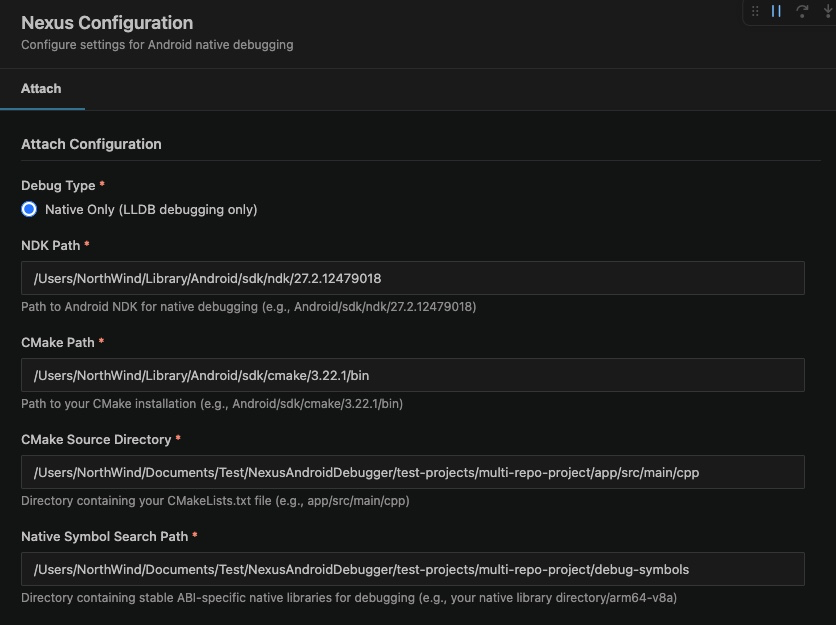

Debug Android C/C++ native code right inside VS Code
Light, fast, and stable. Attach in a couple of clicks and keep working in your existing CMake / incremental-build workflow — no more waiting on a heavy IDE.
Supports CMake-based native projects · 10 languages

Native debugging shouldn't be heavy
If you debug Android native code in Android Studio, this probably sounds familiar:
Slow & laggy IDE
Larger projects make the IDE crawl, and just keeping it open is heavy.
Slow breakpoints
Breakpoints take their time to hit, and stepping through code drags.
Dropped sessions
Debug sessions disconnect, so you have to start over from scratch.
Nexus brings native debugging into VS Code instead — light, responsive, with excellent C/C++ support, and the full debugging experience: breakpoints, variables, call stack, watch, and the debug console.
What it does
Attach in a couple of clicks
Fill in a little configuration once, pick the process, and you're debugging on the device.
Stays out of your way
A lightweight, responsive, and stable connection to your device.
Localized UI
Use the extension in your own language — 10 languages supported, following your VS Code display language.
See it in action

Requirements
- A connected Android device or emulator with USB debugging enabled, running a debuggable build
- Android NDK installed
- A CMake-based native project
Available in your language
Feedback & support
Found a bug or have an idea? We'd love to hear from you.